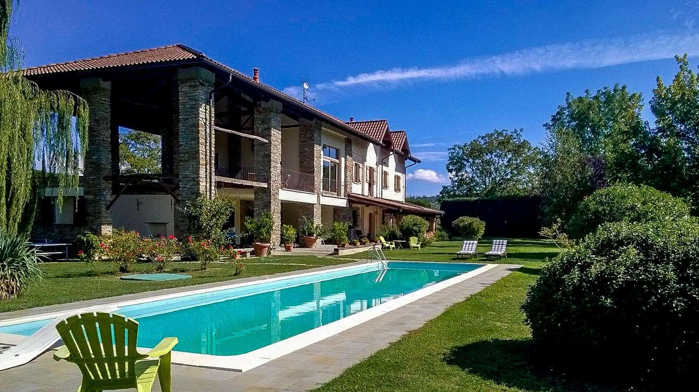

€1.200.000
Melazzo (near Acqui Terme) · Piedmont · Italy
Late-19th-century Melazzo estate restored with exposed terracotta and barrel-vaulted ceilings, set in a 7,000 m² park with a serious 16×4 heated private pool — deep Monferrato character at the €1.2M cap.
Opened 15 Sep 2026 on Selected Homes Piemonte; asking €1.200.000; 792 m² / 5 bed / 4 bath / land 7,000 m²; ~5 km from Acqui Terme; habitable now.
Open the listing